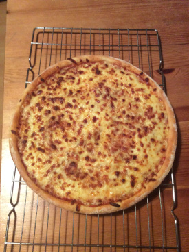

This is a lovely collection of recipes that I make at home. I wanted to hand-write a little cookbook of recipes, but putting them on a website seems easier.
No life stories of other things, just some recipes. There is a cool site that removes all the nugatory stuff that doesn't help you in the kitchen. But why not just leave all that out in the first place?
